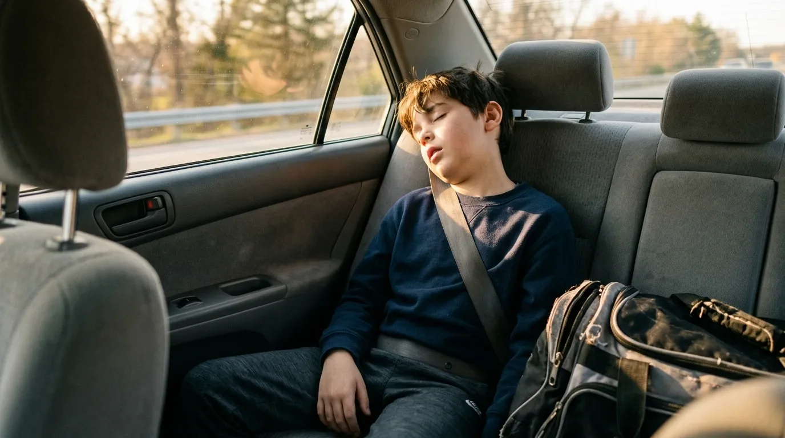
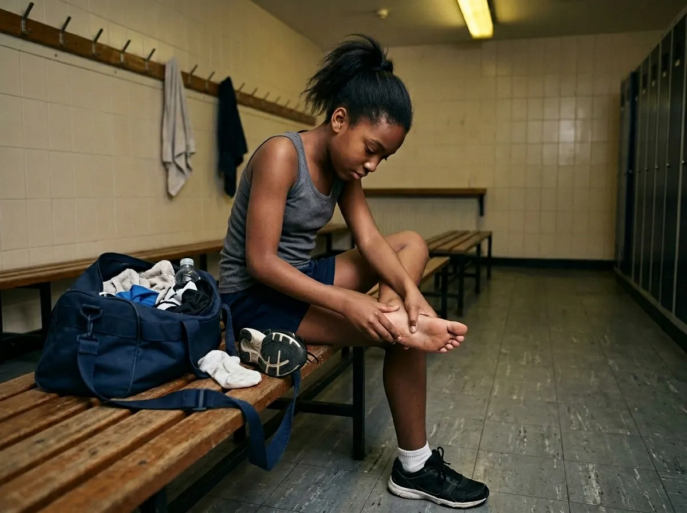

Insights
Thinking on readiness, participation, and development.
What it takes to help young people thrive in sport – and in life – from the team building R1.
What it takes to help young people thrive in sport – and in life – from the team building R1.
Should kids specialize in one sport or play many? The answer depends on how demand is structured – not which label you choose.
Read article →
When youth sport systems extract energy without restoring it, burnout isn’t surprising – it’s predictable.
Read article →
Injury and burnout aren’t individual problems – they’re signals that adult-designed demands have outpaced biological development.
Read article →
Motivation doesn’t disappear because kids stop caring. It disappears because the system ceases to make sense to their nervous systems.
Read article →
Belonging is not something youth bring with them. It is something adults create around them.
Read article →
Most governing bodies govern access, not development. Access without development isn’t an opportunity. And participation alone is not a development strategy.
Read article →R1 is building the first national readiness study for youth athletes. 100,000 children. 30+ sports. 2 years.